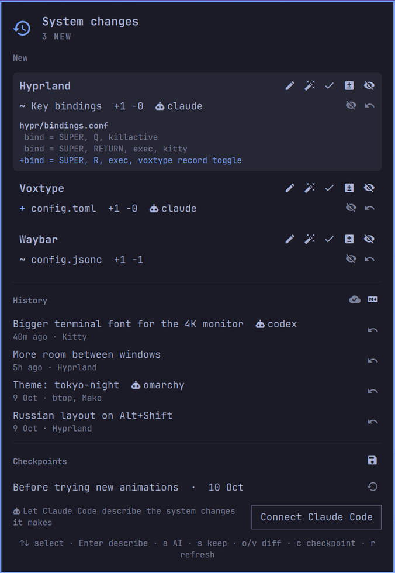

Backend engineer. Go services for real-time traffic, and tools on top of LLM agents.

A history of changes to your Linux setup: config files, packages, services. A reason for each one, diff and undo.
Your AI agents change your system — see what and why.
Skills for Claude Code, Codex, Gemini CLI and others: writing Omarchy plugins, running parallel agent sessions in git worktrees.
Atomic status transitions for any domain entity: a transition graph with guards and hooks, plus compare-and-swap storage.